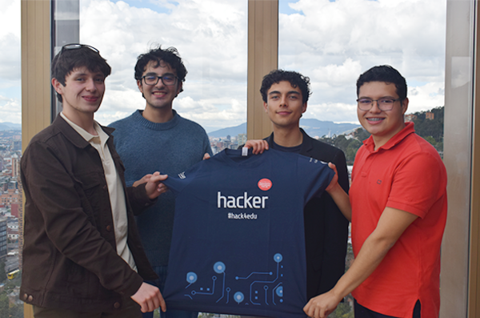
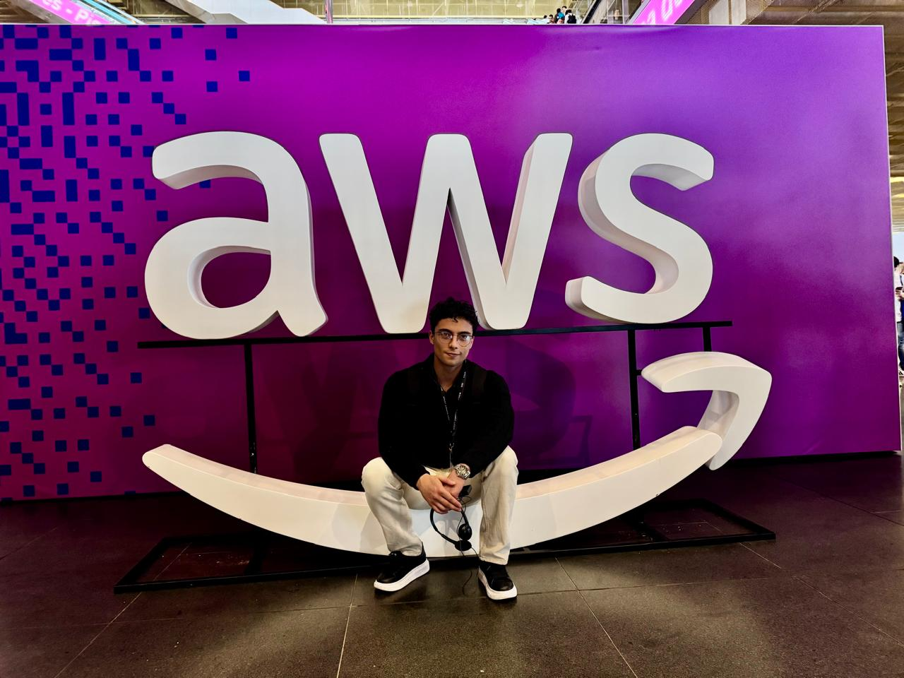

Juan Lizcano
Download CVAbout Me
Turning data into decisions, and ideas into intelligent systems.
Hi! I'm Juan, a Data Scientist and AI Engineer with a B.S. in Data Science from Pontificia Universidad Javeriana. I currently work as a freelance Data Engineer at Imuko, building data pipelines for clients — after leading Computer Vision at Vigías de Colombia — and I love understanding a problem deeply before solving it with data.


Experience
A track record of delivering value across data, AI, and engineering.
Freelance Data Engineer
Building and improving data pipelines for client delivery, working independently as a freelance engineer. Currently supporting data engineering on a data pipeline for Alteon Insurance.
MLOps Engineer & Computer Vision Lead
As Computer Vision Lead, I drove the development of a full-stack video intelligence system utilizing a hybrid model approach (YOLO, D-FINE, ReDetv2, and PaddlePaddle) to automate event detection and metadata generation from live camera streams.
Database Administrator
Developed a robust SQL database schema and relational model for a new public health platform dedicated to the Colombian teaching workforce, ensuring data integrity, scalability, and support for longitudinal health tracking.
Junior Data Scientist
Designed and implemented automated dashboards for directors to monitor organizational health and process efficiency, enabling data-driven decision-making across the organization.
Analyst
Developing a comprehensive market analysis pipeline in Python integrating fundamental and quantitative methodologies. Leveraging yfinance API for financial data extraction, implementing NLP for market sentiment analysis, calculating technical indicators like EMA, and incorporating risk management logic to drive automated trading algorithms.
Database Administrator
Architected and structured complex datasets by normalizing schemas and developing robust ETL pipelines for analytical processing.
Administrative Assistant
Optimized university course scheduling by aligning departmental requirements with student enrollment needs.
Advanced Programming Tutor
Guiding students through the core pillars of OOP using Java, the mechanics of programming logic, and the intricacies of C++ pointer manipulation.
Featured Projects
The work behind the experience — real systems in production and research.
VIGIAS-IA: Real-Time Video Analytics
Video intelligence system for security where I lead Computer Vision: live camera streams processed in real time with a hybrid model ensemble on NVIDIA DeepStream.
View case studyPIPE-IA: Generative AI for Network Analysis
Generative-AI platform (Condor AI) that turns complex network and territory data into clear, actionable strategic insights.
View case studyGenerative AI for Fiscal Control
Generative AI applied to fiscal oversight: automates the analysis of financial and regulatory data, flags anomalies, and produces structured reports.
View case studyEAOA: Autonomous Operations Ecosystem
Multi-agent system that orchestrates specialized AI agents — persistent memory, function calling, agentic workflows — to automate business processes autonomously.
View case studyFinancial Analytics & Market Prediction
Quantitative market pipeline: NLP sentiment, technical indicators, and CNN-LSTM price prediction feeding automated, risk-managed trading.
View case studyExplainable AI (XAI) — Thesis
Thesis research on Explainable AI for Reinforcement Learning: model distillation and neural-activation analysis to make RL policies interpretable.
View case studyFOMAG Database Architecture
SQL schema and relational model for a national public-health platform serving Colombia's teachers — built for integrity, scale, and longitudinal tracking.
View case studyRAG-Powered AI Assistants
AI assistants grounded on curated knowledge bases to minimize hallucination — including the RAG chatbot running on this site.
View case studyTalk to My AI
Ask anything about my experience, skills, or projects — powered by Gemini.
Vision Lab
Let's Build Something Together
I'm always open to discussing new projects, creative ideas, or opportunities to be part of your vision. Whether it's data, AI, or engineering — let's connect.